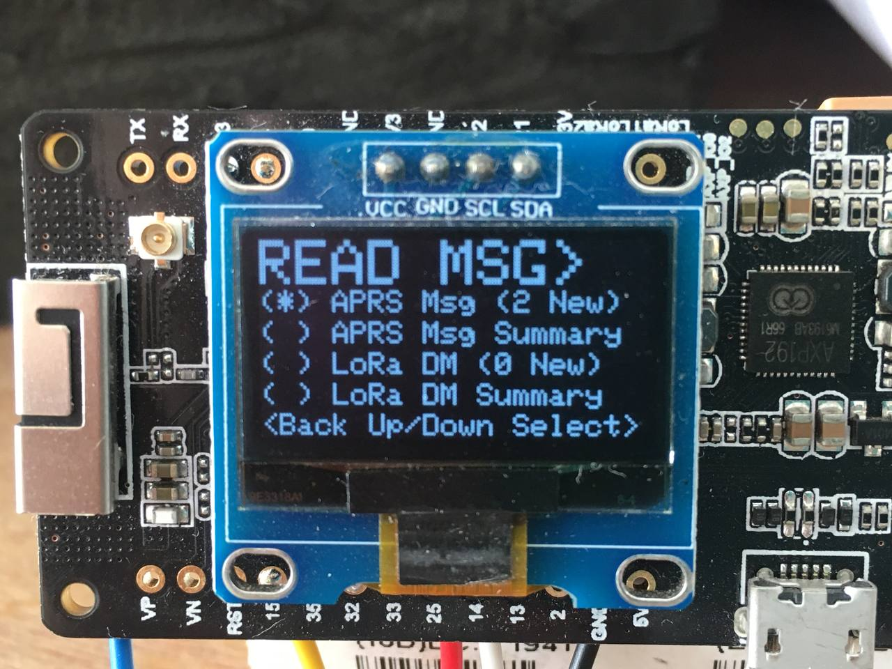

APRS 438 Terminal
Terminal User Interface
Terminal Firmware
Terminal Hardware
News, Social & Co-Development
Acknowledgements
APRS 438 Terminal
»
Terminal User Interface
View page source
Terminal User Interface
See
Figure 1
.

Figure 1
The READ MSG menu